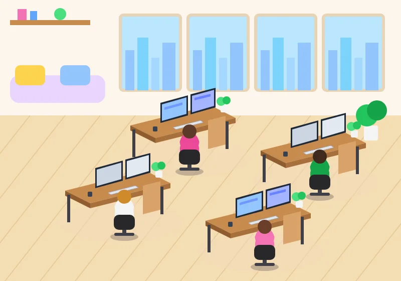

Design the Office Space for Agents
An SVG office where each agent sits at a desk that lights up while it works.
▶ Watch this part (00:51:18)This step gives the AI team a face. The video adds an illustrated office to the Overview page where every agent sits at a desk and types. Later steps make the picture live: a desk lights up while its agent is working. In our app the office is one React component, src/components/office.tsx, drawn entirely in SVG. It needs no image files and scales to any screen size.
You will learn how the video builds its office with a drag-and-drop editor, how our hand-drawn version works line by line, how SVG coordinates and drawing order decide what the viewer sees, and one real bug we fixed: the agents were not facing their screens.
What the video does
1. An office editor instead of drawing by hand
(at 51:21) The presenter calls this "the most interesting feature" of the course: an isometric office preview on the dashboard's Overview page. He uses a free web tool he built for the project, an AI agent office editor (the address bar shows agent-office-editor.vercel.app). It works by drag and drop:
- Pick an office background on the left ("Office Environments"). You can use the built-in "Creative Studio" or upload your own image (at 52:06).
- Drag a character from the "Characters" panel onto a chair. "Add Seat" adds another desk; each seat can use a different character and can be moved and resized (52:28–53:18). The status bar shows the active seat's X, Y, width and height.
- Click "Save Positions". Nothing needs a login; the editor keeps the layout in your own browser (at 53:18).
- Open the "Bundle JSON" tab and copy the full bundle (or download it). The bundle describes the office (its name, width 1536, height 1024 and the background image as a base64 data URL) and a list of seats with their label and x/y position (at 53:42).
2. Save the bundles in the project
(at 53:42) In VS Code he creates a folder office-studio/ at the project root and pastes the bundle into office-studio/modern-office.json. He repeats the editor steps with a second background and saves it as office-studio/wooden-office.json (at 55:14). Because the background is embedded as base64, no separate image file is needed, although the editor can also download the office image.
3. Ask Claude Code to build the component
(at 55:36) In a new Claude Code session (model shown: Opus 5.5, Medium effort) he pastes this prompt:
Implement a reusable AI Agent Office component on the right side of the Overview page. Based on the campaign's selected office, load the appropriate JSON file from /office-studio/wooden-office.json or /office-studio/modern-office.json and render the office layout. Position AI agent characters accurately according to the JSON data and apply their corresponding animations. Ensure the office scales responsively while maintaining fixed relative character positions, even when the window is resized.Two follow-ups polish it. "Can u do full height is it possible?" makes the office fill the right column (at 56:22). Then (at 57:09) he asks for name tags:
Lets add popover just above the agent and show agent name like Research agent, Creator agent etc for social media agent platform and along with name show proper related icon / emojiThe result (at 58:19) shows tags such as "Research Agent" and "Creator Agent" above each character, and the characters' fingers move as they type. When he narrows the window, the tags stay above the same agents. He ends the chapter by committing to a new branch, opening a pull request and letting CodeRabbit review it before merging (59:04–60:43).
How our app does it
Socialix does not use the editor or a background picture. Our office is drawn with simple SVG shapes (rectangles, circles and polygons) in one file. That keeps the app free of large base64 images, and you can read and change every pixel in code. The idea is the same as in the video: a fixed list of desks with x/y positions, a character at each desk, and a name tag above each character that stays in place when the picture is resized.
New to SVG? What it is and why it matters
SVG (Scalable Vector Graphics) describes a picture as shapes instead of pixels: "a rectangle at x 20, y 40, 160 wide", "a circle at 120, 28 with radius 12". The browser draws the shapes at whatever size the picture is shown, so it is always sharp. In React you write SVG elements directly in JSX, just like <div>. Two rules matter in this step:
- The viewBox is the drawing's own coordinate system.
viewBox="0 0 800 560"means "my drawing is 800 units wide and 560 tall". If the picture is shown 400 pixels wide, every unit becomes half a pixel. Positions never change relative to each other. - Later elements are drawn on top of earlier ones. There is no z-index in SVG; the order in the file is the stacking order (like a painter adding layers).
- Create the file
src/components/office.tsxwith the code below. It has no"use client"line, so it can render on the server; it only receives data through props. - Add the
.workinganimation tosrc/app/globals.css(step 04 created that file; the rule is shown further down). - Render
<Office />where you want it. Our app uses it in three places (see the diagram after the code).
import type { AgentRole } from "@/lib/db/schema";
/**
* The AI office: an illustrated room where each team member sits at a desk with a name tag. Agents that
* are working get a glowing screen and a pulsing tag. Pure SVG, so it scales and needs no image files.
*/
const DESKS: { role: Exclude<AgentRole, "master">; label: string; emoji: string; x: number; y: number; hair: string; shirt: string }[] = [
{ role: "creator", label: "Creator Agent", emoji: "✍️", x: 300, y: 250, hair: "#5b3a29", shirt: "#ec4899" },
{ role: "scheduler", label: "Scheduler Agent", emoji: "📅", x: 560, y: 300, hair: "#3f2a1d", shirt: "#16a34a" },
{ role: "research", label: "Research Agent", emoji: "🔎", x: 170, y: 380, hair: "#d08a2c", shirt: "#f5f5f4" },
{ role: "analytics", label: "Analytics Agent", emoji: "📊", x: 450, y: 440, hair: "#6b3f2a", shirt: "#f472b6" },
];
function Desk({ x, y, hair, shirt, working }: { x: number; y: number; hair: string; shirt: string; working: boolean }) {
return (
<g transform={`translate(${x} ${y})`}>
{/* rug */}
<ellipse cx="70" cy="62" rx="125" ry="40" fill="#f3d9b9" opacity="0.55" />
{/* desk top and legs */}
<polygon points="-40,0 120,-40 170,-15 10,25" fill="#c98b4e" />
<polygon points="10,25 170,-15 170,-5 10,35" fill="#a8703b" />
<polygon points="-40,0 10,25 10,35 -40,10" fill="#8f5d30" />
<rect x="150" y="-8" width="6" height="55" fill="#3f3f46" />
<rect x="-36" y="8" width="6" height="55" fill="#3f3f46" />
{/* drawers */}
<polygon points="115,-10 150,-19 150,38 115,47" fill="#d9a36a" />
{/* monitors, screens turned toward the chair */}
<g>
<polygon points="20,-45 75,-60 75,-20 20,-5" fill="#1f2937" />
<polygon points="23,-42 72,-56 72,-23 23,-9" fill={working ? "#93c5fd" : "#cbd5e1"} />
<polygon points="80,-62 130,-75 130,-36 80,-22" fill="#1f2937" />
<polygon points="83,-59 127,-71 127,-39 83,-26" fill={working ? "#a5b4fc" : "#e2e8f0"} />
{working && <polygon points="88,-55 120,-63 120,-58 88,-50" fill="#4f6bff" opacity="0.7" />}
{working && <polygon points="28,-36 64,-46 64,-41 28,-31" fill="#4f6bff" opacity="0.5" />}
</g>
{/* plant */}
<rect x="140" y="-40" width="14" height="14" rx="3" fill="#f5f5f4" />
<circle cx="141" cy="-48" r="9" fill="#4ade80" />
<circle cx="152" cy="-50" r="8" fill="#22c55e" />
{/* mug and keyboard */}
<rect x="5" y="2" width="9" height="10" rx="2" fill="#374151" />
<polygon points="45,4 100,-10 106,-6 51,8" fill="#e5e7eb" stroke="#9ca3af" strokeWidth="1" />
{/* the agent, in front of the desk and seen from behind, facing the screens */}
<ellipse cx="78" cy="92" rx="28" ry="8" fill="#27272a" opacity="0.25" />
<rect x="74" y="74" width="8" height="14" fill="#3f3f46" />
<rect x="58" y="84" width="40" height="6" rx="3" fill="#3f3f46" />
{/* arms reaching for the keyboard */}
<rect x="58" y="14" width="10" height="24" rx="5" fill={shirt} transform="rotate(28 63 34)" />
<rect x="88" y="14" width="10" height="24" rx="5" fill={shirt} transform="rotate(-28 93 34)" />
{/* body and head */}
<circle cx="78" cy="34" r="19" fill={shirt} />
<rect x="59" y="34" width="38" height="28" rx="10" fill={shirt} />
<circle cx="78" cy="12" r="14" fill={hair} />
{/* chair back, in front of the agent's lower back */}
<rect x="57" y="48" width="42" height="30" rx="10" fill="#27272a" />
</g>
);
}
export function Office({ working = [], className = "" }: { working?: AgentRole[]; className?: string }) {
return (
<div className={`relative overflow-hidden rounded-3xl bg-gradient-to-b from-sky-100 to-amber-50 shadow-inner ${className}`}>
<svg viewBox="0 0 800 560" className="h-full w-full" role="img" aria-label="The AI office: the Research, Creator, Scheduler and Analytics agents at their desks">
{/* back wall with windows and a city skyline */}
<rect width="800" height="230" fill="#fdf6ec" />
{[0, 1, 2, 3].map((i) => (
<g key={i} transform={`translate(${240 + i * 135} 30)`}>
<rect width="120" height="150" rx="6" fill="#bae6fd" stroke="#e7d3b5" strokeWidth="6" />
<rect x="10" y="70" width="18" height="80" fill="#93c5fd" />
<rect x="34" y="45" width="22" height="105" fill="#7dd3fc" />
<rect x="62" y="85" width="16" height="65" fill="#a5d8ff" />
<rect x="84" y="55" width="26" height="95" fill="#93c5fd" />
</g>
))}
{/* shelf and sofa on the left */}
<rect x="20" y="40" width="160" height="10" fill="#c98b4e" />
<rect x="35" y="18" width="18" height="22" fill="#f472b6" />
<rect x="60" y="22" width="14" height="18" fill="#60a5fa" />
<circle cx="120" cy="28" r="12" fill="#4ade80" />
<rect x="20" y="150" width="190" height="55" rx="18" fill="#e9d5ff" />
<rect x="30" y="130" width="60" height="40" rx="10" fill="#fcd34d" />
<rect x="120" y="130" width="60" height="40" rx="10" fill="#93c5fd" />
{/* floor */}
<polygon points="0,230 800,230 800,560 0,560" fill="#f5deb3" />
{Array.from({ length: 14 }, (_, i) => (
<line key={i} x1={i * 70 - 200} y1="560" x2={i * 70 + 60} y2="230" stroke="#e8c999" strokeWidth="2" />
))}
{/* tall plants */}
<g transform="translate(740 210)">
<rect x="-14" y="40" width="28" height="30" rx="4" fill="#f5f5f4" />
<circle cx="-8" cy="20" r="22" fill="#22c55e" />
<circle cx="12" cy="10" r="20" fill="#16a34a" />
</g>
{DESKS.map((d) => (
<Desk key={d.role} x={d.x} y={d.y} hair={d.hair} shirt={d.shirt} working={working.includes(d.role)} />
))}
</svg>
{/* name tags as HTML so they stay sharp and readable at any size */}
{DESKS.map((d) => {
const on = working.includes(d.role);
return (
<span
key={d.role}
className={`absolute -translate-x-1/2 whitespace-nowrap rounded-full bg-white/95 px-2.5 py-1 text-[11px] font-semibold text-gray-700 shadow-md md:text-xs ${on ? "working ring-2 ring-brand-500" : ""}`}
style={{ left: `${(d.x / 800) * 100}%`, top: `${((d.y - 105) / 560) * 100}%` }}
>
{d.emoji} {d.label}
{on && <span className="ml-1 text-brand-600">· working</span>}
</span>
);
})}
</div>
);
}Line by line
| Line(s) | Code | What it does & why |
|---|---|---|
| 1 | import type { AgentRole } from "@/lib/db/schema"; | Imports only the type of an agent role ("master" | "research" | "creator" | "scheduler" | "analytics", defined in step 06). import type disappears when TypeScript is compiled, so no database code is pulled into this component. |
| 3–6 | /** The AI office: ... */ | A comment that says what the file is for. "Pure SVG" is the design choice: no image downloads, crisp at every size. |
| 8 | const DESKS: { role: Exclude<AgentRole, "master">; ... }[] = [ | The seating plan: one object per desk. Exclude<AgentRole, "master"> means "any role except master": the Master Agent manages the team and has no desk in the room. Each desk has a label, an emoji for the tag, its x/y position in the 800 × 560 drawing, and two colours for the character (hair and shirt). |
| 9–12 | { role: "creator", label: "Creator Agent", ... x: 300, y: 250, ... } | The four desks. Smaller y means further back in the room (higher on screen). Creator (300, 250) and Scheduler (560, 300) sit at the back, Research (170, 380) and Analytics (450, 440) at the front. This is the same information the video's bundle JSON stores per seat. |
| 15 | function Desk({ x, y, hair, shirt, working }: {...}) | A small component that draws one desk with its agent. It is not exported; only Office uses it. working switches the screens between "on" and "off" colours. |
| 17 | <g transform={`translate(${x} ${y})`}> | <g> groups shapes. translate(x y) moves the whole group, so every shape inside is drawn around a local point (0, 0). That is why the desk's numbers below are small (like -40,0) and identical for all four desks: only the translate differs. |
| 19 | <ellipse ... fill="#f3d9b9" opacity="0.55" /> | A soft rug under the desk. Drawn first, so everything else sits on top of it. |
| 21–23 | <polygon points="-40,0 120,-40 170,-15 10,25" ... /> | The desk top (a slanted four-corner shape gives the isometric look) and two darker polygons for its front and side edges. Darker shades on the sides make it look three-dimensional. |
| 24–25 | <rect x="150" y="-8" width="6" height="55" ... /> | Two desk legs as thin grey rectangles. |
| 27 | <polygon points="115,-10 150,-19 150,38 115,47" ... /> | A drawer cabinet at the right end of the desk. |
| 29–36 | <g> ... fill={working ? "#93c5fd" : "#cbd5e1"} ... </g> | Two monitors: a dark frame polygon and a screen polygon inside it. The screen colour depends on working: light blue when the agent is busy, grey when idle. Lines 34–35 add a "line of text" on each screen only while working ({working && ...} renders nothing when false). |
| 38–40 | <rect ... /> <circle ... fill="#4ade80" /> | A potted plant: a white pot and two green circles for leaves. |
| 42–43 | <rect x="5" y="2" ... /> <polygon points="45,4 100,-10 ..." ... /> | A mug and a keyboard lying on the desk top. strokeWidth is JSX spelling of the SVG attribute stroke-width. |
| 44–47 | {/* the agent, in front of the desk ... */} <ellipse cx="78" cy="92" ... /> | The character starts here. Because it comes after the desk, it is drawn on top of the desk, which reads as "in front of the desk". Lines 45–47 draw a floor shadow, the chair's post and the chair's base. |
| 49–50 | <rect ... fill={shirt} transform="rotate(28 63 34)" /> | Two arms, tilted inwards by ±28 degrees around the shoulders so they reach towards the keyboard. rotate(angle cx cy) rotates around the point (cx, cy). |
| 52–54 | <circle cx="78" cy="34" r="19" fill={shirt} /> ... <circle cx="78" cy="12" r="14" fill={hair} /> | Shoulders, torso and head. The head is just a hair-coloured circle with no face: we see the agent from behind, looking at the monitors. |
| 56 | <rect x="57" y="48" width="42" height="30" rx="10" fill="#27272a" /> | The chair back, drawn last so it covers the agent's lower back. This single ordering choice is what makes the character look seated in the chair, seen from behind. |
| 61 | export function Office({ working = [], className = "" }: {...}) | The component other pages use. working is the list of roles that are busy right now (empty by default, so the office also works as a static picture). className lets the caller set the size, for example an aspect ratio. |
| 63 | <div className={`relative overflow-hidden rounded-3xl bg-gradient-to-b from-sky-100 to-amber-50 shadow-inner ${className}`}> | The frame. relative makes this box the reference for the absolutely positioned name tags. overflow-hidden + rounded-3xl clip everything to rounded corners. bg-gradient-to-b from-sky-100 to-amber-50 is a sky-to-sand background; shadow-inner adds depth. |
| 64 | <svg viewBox="0 0 800 560" className="h-full w-full" role="img" aria-label="..."> | The drawing area: 800 × 560 units, stretched to fill the frame. role="img" and aria-label tell screen readers what the picture shows. |
| 66–75 | <rect width="800" height="230" ... /> {[0, 1, 2, 3].map((i) => ( <g ... translate(${240 + i * 135} 30)> | The back wall (the top 230 units), then four windows 135 units apart, each with four blue "buildings" as a skyline. .map creates the four copies; key={i} is required by React for lists. |
| 77–83 | <rect x="20" y="40" width="160" height="10" ... /> ... | A shelf with books and a plant, and a sofa with two cushions on the left wall. |
| 85–88 | <polygon points="0,230 800,230 800,560 0,560" ... /> {Array.from({ length: 14 }, ...)} | The floor below the wall, plus 14 slanted lines for floorboards. Array.from({ length: 14 }, (_, i) => ...) is a quick way to loop 14 times in JSX. |
| 90–94 | <g transform="translate(740 210)"> ... | A tall plant in the right corner. |
| 95–97 | {DESKS.map((d) => ( <Desk ... working={working.includes(d.role)} /> ))} | Draws the four desks in the order of the DESKS array: back desks first, front desks last, so a front desk overlaps a back one correctly. working.includes(d.role) turns that desk's screens on. |
| 99–112 | {DESKS.map((d) => { const on = working.includes(d.role); return ( <span ... /> ); })} | The name tags, written as HTML <span>s on top of the SVG, not as SVG text. HTML text keeps a readable font size (11px, 12px from the md breakpoint) even when the picture shrinks; SVG text would shrink with the drawing. |
| 105 | className={`absolute -translate-x-1/2 whitespace-nowrap rounded-full bg-white/95 ... ${on ? "working ring-2 ring-brand-500" : ""}`} | absolute positions the tag inside the frame. -translate-x-1/2 shifts it left by half its own width so it is centred on the desk. whitespace-nowrap keeps "Research Agent" on one line. A working agent's tag gets the blue ring-2 ring-brand-500 outline and the working class (the pulsing animation from globals.css). |
| 106 | style={{ left: `${(d.x / 800) * 100}%`, top: `${((d.y - 105) / 560) * 100}%` }} | The key trick from the video's prompt ("fixed relative character positions"). The desk's SVG position is turned into a percentage of the frame: x 300 of 800 becomes left: 37.5%. d.y - 105 places the tag 105 units above the desk's anchor point, above the monitors. Percentages scale with the frame exactly like the viewBox does, so tags never drift. |
| 108–109 | {d.emoji} {d.label} {on && <span ...>· working</span>} | The tag text, for example "Creator Agent", plus "· working" in brand blue while that agent is busy. |
The pulsing ring comes from this rule in src/app/globals.css (lines 18–26 of that file):
/* A soft breathing ring around agents that are working. */
@keyframes pulse-ring {
0% { box-shadow: 0 0 0 0 rgba(79, 107, 255, 0.5); }
70% { box-shadow: 0 0 0 10px rgba(79, 107, 255, 0); }
100% { box-shadow: 0 0 0 0 rgba(79, 107, 255, 0); }
}
.working {
animation: pulse-ring 1.6s infinite;
}@keyframes describes an animation: a blue shadow that grows from 0 to 10px while fading out. .working plays it every 1.6 seconds forever. Any element with the working class pulses, which is why the agent cards on the next page reuse it.
Coordinates: where everything sits
Every desk is placed with translate(x y) inside the 800 × 560 viewBox. The tag uses the same x and y, converted to percentages. Here are the real numbers from DESKS:
DESKS (the picture is scaled to 60 %). The Creator tag sits at y 250 - 105 = 145, which is top: 25.9%. Back desks have smaller y, so they are drawn first and overlapped by front desks.New to percentage positioning? Why the tags never drift
The SVG stretches to fill its frame, so a point at x 300 of 800 is always 37.5 % from the left edge, whatever the frame's width in pixels. A CSS rule left: 37.5% on an absolutely positioned element inside the same frame lands on exactly the same spot. Pixel values (left: 300px) would only be right at one window size. This is what the video's prompt means by "maintaining fixed relative character positions". The frame's aspect ratio must also stay fixed (we pass aspect-[10/7], which matches 800 × 560), otherwise the SVG would add empty bands and the vertical percentages would be off.
Drawing order inside one desk
Where the office is used
working list differs.
office.tsx (800 × 560, test data). The Creator (back left) and Analytics (front right) desks have glowing blue screens because those agents were working.- On the Overview page, an office with a back wall, four windows, a sofa and four desks, each with two monitors and a person sitting in front of them.
- The office keeps its proportions (10 : 7) as you resize the window, and every name tag stays above its desk.
- While an agent works (after step 13), its screens turn blue and its tag shows "· working" with a pulsing ring.
A real bug: the agents were not facing their screens
Our first version of the office looked fine at a glance, but the people sat at the side of each desk, next to the monitors instead of in front of them. Nobody could have typed there; there wasn't even a keyboard. Code like this can be perfectly valid TypeScript and still draw the wrong scene; a type check cannot see a picture. You only notice by looking at the rendered page.
This was the agent part of the Desk group in that first version (the monitors were the same as today):
{/* chair and agent (seen from behind) */}
<ellipse cx="0" cy="58" rx="26" ry="8" fill="#27272a" opacity="0.25" />
<rect x="-22" y="10" width="40" height="34" rx="10" fill="#27272a" />
<circle cx="-2" cy="6" r="18" fill={shirt} />
<rect x="-20" y="6" width="36" height="26" rx="10" fill={shirt} />
<circle cx="-2" cy="-16" r="14" fill={hair} />Read the numbers. The desk top spans x −40 to 170 and the monitors x 20 to 130, but the agent spans only x −22 to 18 and sits level with the desk (head at y −16). So the person was at the desk's left end, with the screens to their right: they faced the viewer or the side, not the monitors. The chair (line 2 of this snippet) was drawn first, so it ended up behind the body like a backrest seen from the front.
The fix moved the character in front of the desk, seen from behind. In the current file you can check each part:
- Centred on the monitors: body and head now share the centre x 78 (was about −2), in the middle of the monitors' x 20–130.
- In front of the desk: the head moved from (−2, −16) to (78, 12), at the desk's front edge, and the body continues towards the viewer to y 62. Because the character is drawn after the desk, it covers the desk's front edge.
- Seen from behind: the chair back is now drawn last (line 56), over the lower body, and the head is a plain hair circle.
- Something to type on: a keyboard was added (
points="45,4 100,-10 106,-6 51,8", line 43). To make room, the drawers moved from"95,-5 140,-17 140,40 95,52"to"115,-10 150,-19 150,38 115,47", the mug from x 60 to x 5 and the rug's centre from x 40 to x 70. - Arms: an in-between attempt tilted the arms outwards (
rotate(-18)androtate(14)), which looked like raised hands. The final arms tilt inwards,rotate(28 63 34)androtate(-28 93 34), mostly hidden behind the body.
The comments in the current file record the intent: "monitors, screens turned toward the chair" (line 28) and "the agent, in front of the desk and seen from behind, facing the screens" (line 44).
- Tags drift away from the agents when you resize. The frame's aspect ratio does not match the viewBox. Pass
className="aspect-[10/7]"(800 / 560 = 10 / 7), or the SVG letterboxes itself while the percentage tags do not. - A desk appears on top of the agent in front of it. The order of
DESKSmatters: list back desks (small y) before front desks (large y). - Hex colours in SVG look like a mistake in a Tailwind project. They are fine here: SVG
fillattributes take plain colour values, and Tailwind classes do not apply to most SVG attributes. - Name tags written as SVG
<text>become unreadably small on phones, because SVG text shrinks with the drawing. Keep them as HTML. - Trusting a type check for visual work.
pnpm typecheckonly checks types; it cannot tell that an agent sits beside its desk. Open the page (or take a screenshot) after every visual change.
- Picture: the video uses a detailed illustrated office image and character sprites from the presenter's office editor, stored as base64 inside
office-studio/*.json. We draw a simpler office with SVG shapes inoffice.tsx; there is no JSON file and no image. - Offices: the video lets each campaign pick the modern or the wooden office. We have one office.
- Agents at desks: the video's office shows Research, Creator, Scheduler and Publisher (later renamed Analytics in step 13). Ours shows Research, Creator, Scheduler and Analytics; the Master Agent has no desk.
- Animation: the video's characters move their fingers while typing. Ours stay still; instead, the screens glow and the tag pulses while an agent is actually working (driven by real data from step 11).
- Click to chat: in the video, clicking a character on the Overview page opens that agent's chat (step 11). Our office is a picture only; you chat on the AI Agent page.
- The video designs the office in a drag-and-drop editor, exports a bundle JSON (background plus seat positions) and asks Claude Code to render it.
- Our
office.tsxdraws the room with SVG shapes; aDESKSlist holds each agent's x/y in an 800 × 560 viewBox. translate(x y)lets oneDeskdrawing be reused at four positions; the order of elements decides what is in front.- HTML name tags use percentages (
x / 800,(y - 105) / 560) so they stay above their desks at any size. - The
workingprop turns screens blue and makes tags pulse; the next page feeds it live data. - Bug 4: agents first sat beside their desks; moving them in front, centred on the monitors and seen from behind fixed it. Look at the rendered picture, not only the type check.